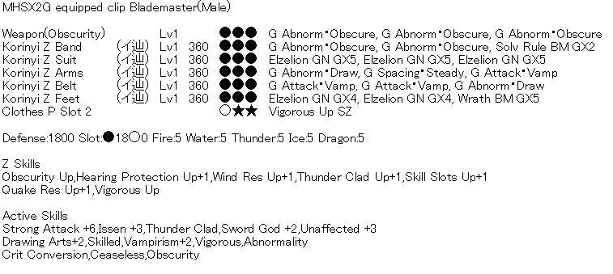
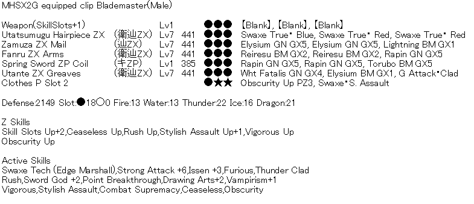
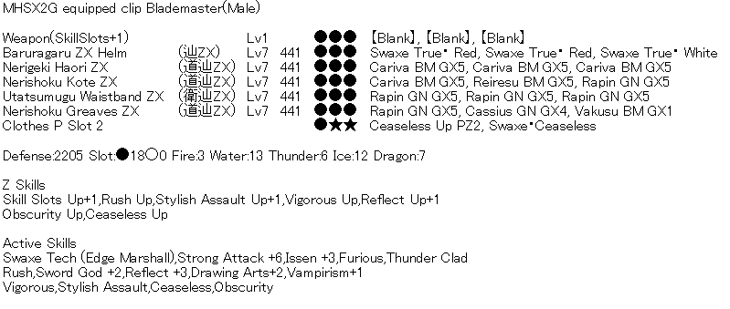
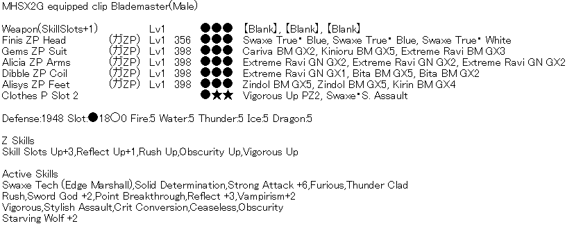

Builds Against Zeniths
This section will have different builds you can use based on how far you have progressed in the game. We will suggest sets that should work against basically every Zenith.
GR200+
For GR200+ (basically when unlocking zeniths) you want to use a standard korinyi set together with a switch axe that can make use of the skill Abnormality.

*IF USING GRAVI SWAXE Change cuff to "Obscurity UP SZ"
Weapon:
- Gasu (Rage Axe "Pit" line), Status Phial, Poison, Obscurity UP
- Akura (Vashim Zelki line), Status Phial, Para, Drug Knowledge UP
- Gravi (Magma Axe "Cosmo" line), KO Phial, Blast, Vigorous UP
Guild Food: Incitement/All Res+20 (if needed)
Poogie Skill: Status/Defence
SR Skills: All Res/Ele Res (depends on matchup)
Caravan Skills: Weapon Art (lg) / KO Technique (KO Phial ONLY) / Riser (lg)
GR600+/F50
For GR600+ (Z3 unlocked) you want to use a ZY set together with a Twin Star piece.
Weapon: Any SSU Swaxe (Evo/Fransisca/Baru/etc)
Sigils:
- Non KO Phial = SAF Up/(SAF) Guard/Atk + All Atk + All Atk
- KO Phial = SAF Up/(SAF) Stun. B/Atk + Stun Atk Atk + All Atk
Guild Food: Incitement/All Res +20 (if needed)
Poogie Skill: Defence
SR Skills: All Res/Ele Res (depends on matchup)
Caravan Skills: Weapon Art (lg) / KO Technique (KO Phial ONLY) / Riser (lg)
GR800+/F62 (Combat Supremacy)
At GR800 you can use this set or the next set depending on the playstyle you prefer.

Weapon: Any SSU Swaxe (Evo/Fransisca/Baru/etc)
Sigils:
- Non KO Phial = SAF Up/(SAF) Guard/Atk + All Atk + All Atk
- KO Phial = SAF Up/(SAF) Stun. B/Atk + Stun Atk Atk + All Atk
Guild Food: Incitement/All Res+20
Poogie Skill: Defence
SR Skills: All Res/Ele Res (depends on matchup)
Caravan Skills: Weapon Art (lg) / KO Technique (KO Phial ONLY) / Riser (lg)
GR800+/F62 (Reflect)
If you prefer to play with stamina you can run this reflect set.

Weapon: Any SSU Swaxe (Evo/Fransisca/Baru/etc)
Sigils:
- Non KO Phial = SAF Up/(SAF) Guard/Atk + All Atk + All Atk
- KO Phial = SAF Up/(SAF) Stun. B/Atk + Stun Atk Atk + All Atk
Guild Food: Incitement/All Res+20
Poogie Skill: Defence
SR Skills: All Res/Ele Res (depends on matchup)
Caravan Skills: Weapon Art (lg) / KO Technique (KO Phial ONLY) / Riser (lg)
GR999/F80 (Combat Supremacy)
For most zenith fights you can use this general set with combat supremacy:
Weapon: Any SSU Swaxe (Evo/Fransisca/Baru/etc)
Sigils:
- Non KO Phial = SAF Up/(SAF) Guard/Atk + All Atk + All Atk
- KO Phial = SAF Up/(SAF) Stun. B/Atk + Stun Atk Atk + All Atk
Guild Food: Incitement/All Res+20
Poogie Skill: Defence
SR Skills: All Res/Ele Res (depends on matchup)
Caravan Skills: Weapon Art (lg) / KO Technique (KO Phial ONLY) / Riser (lg)
In most cases you will just switch out the Diva skill for whatever is needed (e.g. Lone Wolf for damage, Guard+2 when it's needed or others). It is not the most optimal way to do it but this approach is the one that saves by far the most RDP. This is especially the case considering that you often hunt Zeniths in a group rather than solo so a set without Lone Wolf is definitely preferred. If you would rather use a non-CS set you can use this one:
GR999/F80 (Reflect)

Weapon: Any SSU Swaxe (Evo/Fransisca/Baru/etc)
Sigils:
- Non KO Phial = SAF Up/(SAF) Guard/Atk + All Atk + All Atk
- KO Phial = SAF Up/(SAF) Stun. B/Atk + Stun Atk Atk + All Atk
Guild Food: Incitement/All Res+20
Poogie Skill: Defence
SR Skills: All Res/Ele Res (depends on matchup)
Caravan Skills: Weapon Art (lg) / KO Technique (KO Phial ONLY) / Riser (lg)
Zenith Matchups
If you don't want to grind alot of Swaxes you should at least make these four. Frostaxe is best if you don't care about Z breaks. Most Zeniths are weak to either Poet or Fransica. Baru covers multi monster quests and hunts where EVOS/NP weapons are banned.
Z weapon: Baruragaru Swaxe (Power Phial, Water)
Festi weapon: Poet Swaxe (Ele Phial, Music)
Netcafe weapon: Francisca Swaxe (KO Phial, Light)
Evolution weapon: Despair Frostaxe (Power Phial, Ice)
These are the most popular weapon choices that every Swaxe main should own regardless of what they hunt. Now onto the matchups:
Akura Vashimu
Guard+2 lets you parry some of the crystal attacks but it's not mandatory. You can avoid the digging/burrowing one shot by extreme running if you don't have Z para. Otherwise sheathe and try to roll. After being flipped when Akura stands it will always turn around, tremor and then roar.
Example Run (Z4 Road Run)
Ele Res: not important
Diva Skill: Guard+2 (he has lots of moves that are easier to deal with when using Guard+2) / Crystal Res (another option) / Lone Wolf (Solo)
Recommended Weapon: Fransisca / Baru
Anorupatisu
A very funky matchup, Anoru can be an uncomfortable fight because of his instant tremor attack and his oneshot and the terrible hitbox of his phase transition move. Overall though it's still favored for Swaxe since you can parry everything he does. I urge you to get used to the tell of his oneshot, it's very dangerous.
Example Run 1 (without prayers), Example Run 2 (with prayers)
Ele Res: >55 Ice Res
Diva Skill: Lone Wolf (Solo)
Recommended Weapon: Fransisca / Ruber / Gravi
Barurugaru
Baru has a fast roar that it likes to use after certain attacks or actions such as successfully pinning a hunter and draining their blood. Standing directly in front of Baru is dangerous as it has a fast grapple move that is hard to react to so stand to the side of the head when trying for a Z break.
Example Run 1 (without prayers), Example Run 2 (with prayers)
Ele Res: >55 Water Res
Diva Skill: Lone Wolf (Solo)
Recommended Weapon: Fransisca / Ruber / Gravi
Blangonga
Pretty decent matchup for Swaxe but can catch you off-guard if you're not careful. The strategy is to always stay to his side and hit his forearms for the arm breaks. His most dangerous attack is the ice breath which can be parried but has a relatively short windup, so watch out for that. His tremors and snowball attack can be annoying but is generally easy to deal with.
Example Run (Z4 Road Run)
Ele Res: >55 Ice Res
Diva Skill: Lone Wolf (Solo) / Guard+2 (nice option to block the snowballs instead of having to fadeslash them)
Recommended Weapon: Fransisca / Ruber
Bogabadorumu
Very easy matchup for Swaxe. He is mind-numbingly slow and his moves are very telegraphed. His moves deal a ton of damage but getting hit is mostly on the player since all of his moves can be parried with ease. His most dangerous attack is his tail slam into ground explosion attack at Z4, sometimes the explosions can stack in a nasty way and generally oneshot you so be careful.
Example Run (Z4 Road Run)
Ele Res: not important
Diva Skill: Lone Wolf (Solo)
Recommended Weapon: Poet
Daimyo Hermitaur
Daimyo is interesting because he is one of those Zeniths with 2 separate phases. His first phase (water phase) consists of water sprays, uppercuts into slams and his claw attacks are a bit annoying but not really dangerous. Now his second phase (dirt phase) is what makes this fight really hard, on every claw attack he gets an aoe explosion, his water spray turns into a dirt spray that hits you 1000 times and even his phase transition is dangerous. Be careful during this phase specifically.
Example Run (Z4 Road Run)
Ele Res: >55 Water Res
Diva Skill: Lone Wolf (Solo)
Recommended Weapon: Fransisca / Ruber
Doragyurosu
Dora is a very favourable matchup for Swaxe but also a bit dangerous. Key things to note is that when playing CS, you want to run to his body when he does the flying explosion into laser (unless you have Guard+2 in which case you can parry it). His only other dangerous move is his grab one shot, but once you get used to the tell it's really easy to fadeslash/parry.
Example Run
Ele Res: >55 Dragon Res
Diva Skill: Lone Wolf (Solo) / Guard+2 (for parrying his explosion->laser it can be comfy)
Recommended Weapon: Fransisca / Ruber / Gravi
Espinas
Espinas is a weird matchup. On paper he's super uncomfortable but his main threat isn't his attacks but his Z poison. Z4 poison ticks extremely fast, and in combination with its 1 frame instant charge Espinas can easily kill a solo hunter. A lot of his other moves have really easy tells and can be parried/avoided with ease. His "nuke" has such a large windup that extreme running out of it before headbreak is a no-brainer.
Example Run (Z4 road run)
Ele Res: not important
Diva Skill: Lone Wolf (Solo) / Status Immunity Myriad (helps alot against the para)
Recommended Weapon: Poet
*Guild Food*: Wide Area +3 is very useful in a group as it makes your antivenoms a party wide buff
Gasurabasura
Notoriously hard matchup, there's no way around it. He has 2 phases: poison phase and power phase. His poison phase is super uncomfortable: his poison bubbles have a very dumb hitbox, and he has a landslide into a roar move that will kill you very quickly if you're not careful. He also has a turn-around bite attack that will poison you even if you parry it.
His power phase is more fun but also quite dangerous: all his moves are very powerful and a lot of them gain Z tremor. His fake-clap is luckily not really dangerous for Swaxe since you can do a fadeslash if you miss the parry on the fake-out. His bulldozer is the most dangerous move aside from the dig but if you're close to him he will generally not use it.
Example Run
Ele Res: not important
Diva Skill: Lone Wolf (Solo)
Recommended Weapon: Fransica / Baru
Giaorugu
Watch the tail, Giao will raise it before doing a fast 360 double tail whip. When Giao charges up ice breath and aims it at the floor you can knock him over/out of it by dealing enough damage. Giao can inflict defense down with some of his bite attacks which makes everything else he does much deadlier.
Example Run 1 (no prayers), Example Run 2 (with prayers)
Ele Res: >55 Ice Res
Diva Skill: Lone Wolf (Solo)
Recommended Weapon: Ruber / Fransisca
Gravios
Quite a dirty matchup on Swaxe, but can also be fun. His absolutely most dangerous move (especially with cs) is the vertical into horizontal laser, the vertical laser consists of multiple hitboxes that will oneshot you if you're in the middle of it. If you manage to avoid the vertical one, parry into fadeslash on the horizontal is much easier to time. He also has a lot of tremors, explosion attacks and most notably his oneshot, be careful of the wind pressure when he flies up!
Other than that it's just parry/fade timing, the last portion can be parried.
Example Run (with prayers)
Ele Res: >55 Fire Res
Diva Skill: Guard+2 (Multi/Comfort) / Lone Wolf (Solo)
Recommended Weapon: Poet / Baru
Harudomerugu
Another difficult one, Haru can really rub salt in your wound if you are not careful. His attacks hit very hard, some of them like his arm empowered dash into spin can catch you off guard. He has 2 true one shots that have such a long windup that they should be no problem to avoid but you do have to learn the timing for that. His famous attack is his mercury gatling gun, you need to parry the first portion and then extreme run away (or parry everything for style points). Everything else is learning by doing.
Example Run 1 (without prayers), Example Run 2 (with prayers)
Ele Res: not important
Diva Skill: Lone Wolf (Solo)
Recommended Weapon: Fransisca / Chroma
Hypnoc
Guard+2 is required to make this fight playable on CS+SW. Extremely punishing in solo play but much less so when you have teammates that can wake you from Z sleep. Be careful of his beak attack, that one has multiple sleep hitboxes and is pretty much guaranteed to sleep you if you're right in front of him.
Example Run (Z4 Road Run)
Ele Res: not important
Diva Skill: Guard+2 (unless it's in the set)
Recommended Weapon: Fransisca
Hyujikiki
After every 2nd stagger Hyuji will do a jump forward attack. Parrying Hyuji's spikes can still cause bleeding if you are standing where they land. You can reflect his ultimate without guard+2 just watch the circle that closes in on your hunter for the timing.
Example Run (Z4 Road Run)
Ele Res: not important
Diva Skill: Lone Wolf (Solo)
Recommended Weapon: Fransisca / Ruber / Gravi
Inagami
Inagami is an insanely hard matchup. His turns and tail slaps inflict Z Sleep, after which he can spawn bamboos below you (which usually kills you at Z4 without diva procs). All of his attacks do crazy damage and he has a lot of unblockable sleep attacks. Try to get used to his tells for his different attacks, with guard+2 this matchup is learnable but a single mistake can mean immediate death especially in solo.
Example Run
Ele Res: not important
Diva Skill: Guard+2 (unless it's in the set)
Recommended Weapon: Fransisca / Ruber
Khezu
Avoid standing behind Khezu and be prepared to parry (or fade slash) the one shot when in front. His vore attack has a very funky hitbox so you should get used to parrying it. He is very easy to trip so make good use of that. His other attacks, while dealing some damage, are really not that noteworthy with thunder res.
Example Run (Z4 Road Run)
Ele Res: >55 Thunder Res
Diva Skill: Lone Wolf (Solo) / Status Immunity Myriad (can sometimes help)
Recommended Weapon: Fransisca / Ruber / Gravi
Midogaron
Mido is fairly easy since you can parry everything he does with ease and when he starts teleporting and using his explosion, an extreme run into upslash on his head is a guaranteed stagger. His tornado at Z4 is super easy to deal with since extreme run gets you out of the area safely. Another dangerous attack would be his headbutt, it deals a lot of damage and has little windup so make sure to stay on his side when he's idle.
Example Run
Ele Res: >55 Fire Res
Diva Skill: Lone Wolf (Solo)
Recommended Weapon: Poet
Plesioth
Plesioth is a really annoying matchup. All of his bubbles in his water form have the potential to drain your entire HP when you're caught and he has the most annoying instant Z scream out of any monster. Both his dash and his double hip check would be 2 notably dangerous moves to look out for, his goofy run also spawns a lot of bubbles so be careful for that.
Example Run (with prayers)
Ele Res: >55 Water Res
Diva Skill: Lone Wolf (Solo)
Recommended Weapon: Fransisca / Ruber / Gravi
Rathalos
Super free matchup, can hardly be called zenith without his zenith fire. His attacks are pretty self explanatory when you see them, his most "dangerous" attack is his tornado explosion but the windup is very large so you can extreme run out of it and parry the explosion with ease. Very braindead matchup.
Example Run
Ele Res: >55 Fire Res
Diva Skill: Lone Wolf (Solo) / Guard+2 (able to block some moves for better punishes)
Recommended Weapon: Poet
Rukodiora
Quite a tough matchup for Swaxe. A lot of his moves you can parry, but then there comes the small sweeping laser into big laser... with CS you need to be positioned to his side to not be caught off-guard, otherwise you are pretty much dead. A notoriously difficult move with CS to avoid is his nuke, you need pretty much perfect timing on the fade-slash to avoid all the active frames. I really encourage everyone to bring magnet res when grinding him normally.
Example Run
Ele Res: >55 Dragon Res
Diva Skill: Magnet Res (REALLY recommended when farming him) / Lone Wolf (Solo)
Recommended Weapon: Poet
Taikun Zamuza
Super fun matchup on Swaxe. He has 2 phases: a shell phase and a thunder phase. In his shell phase he will do tremor attacks and hit you both with his giant mud ball and his claw. Very easy to avoid these attacks. Super pound in the center of the arena you have to fadeslash but the windup is very large.
Example Run 1, Example Run 2 (with prayers)
Ele Res: >55 Thunder Res
Diva Skill: Lone Wolf (Solo)
Recommended Weapon: Poet
Tigrex
Tigrex is an interesting matchup because in principle (aside from his bleed mechanic) he really doesn't have a blight that makes him stand out (similar to hyuji) but his hitboxes are really bad. A big advice is to just parry the landslide and fadeslash the cross slice since both have a god awful hitbox to iframe/parry respectively. His hipcheck has a terrible hitbox but is generally not dangerous. Be wary of his jump (he almost always does it when you're bleeding) he will combo you to death. Other than that the matchup is fairly simple.
Example Run
Ele Res: not important
Diva Skill: Lone Wolf (Solo)
Recommended Weapon: Fransisca
Toridcless
Torid is an extremely fun but also notoriously dangerous matchup. Parry weapons will have a lot of fun with this monster because all of his thunder explosions are very satisfying to punish. The sidehop into the laser is a one shot at Z4 but extreme run is fast enough to get close to him, parry the blink and either run to him (if you are close) or prepare to fadeslash the beam (if you are far). His other oneshot at Z4 involves him flying up, and landing down attempting to grab you with his feet. With CS you need to get used to the parry/attack -> fadeslash timing on that move because the active frames can be a bit unforgiving if you're too early.
Example Run
Ele Res: >55 Thunder Res
Diva Skill: Lone Wolf (Solo) / Guard+2 (Multi/Comfort)
Recommended Weapon: Chroma / Poet